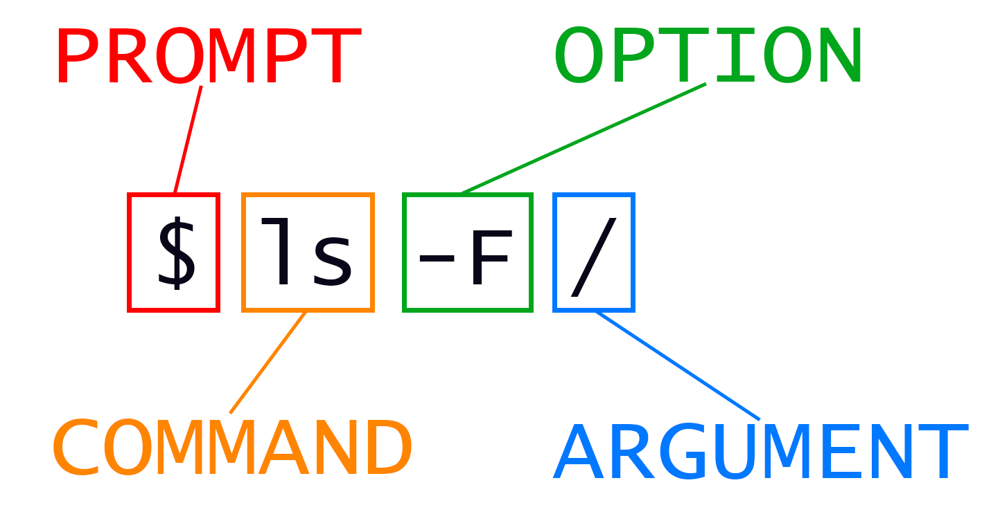

2 Navigating Files and Directories
2.1 The File System
The part of the operating system responsible for managing files and directories is called the file system. It organizes our data into files, which hold information, and directories (also called “folders”), which hold files or other directories.
2.1.1 The Root Directory
The root directory is the top-level directory in a file system. It is represented by a single forward slash (/). Every other file or directory in the file system is contained within the root directory, either directly or indirectly. Think of it as the starting point of the file system hierarchy.
2.1.2 The Home Directory
The home directory is a special directory designated for a specific user. It is where users have their personal space to store files and directories. Each user on the system has their own home directory. In most Linux systems, the home directory for a user named “username” would be /home/username. For the root user, the home directory is usually /root.
2.1.3 The Uses of /
The forward slash (/) serves two important purposes in the file system:
Root Directory: As mentioned, the single forward slash represents the root directory. It is the base of the file system hierarchy.
Path Separator: The forward slash is also used to separate directories and files in a path. For example, in the path
/home/username/Documents, the slashes separate the directorieshome,username, andDocuments.
2.1.4 Examples
- Root Directory: The command
cd /changes the current directory to the root directory. - Home Directory: The command
cd ~orcd /home/usernamechanges the current directory to the home directory of the user “username”. - Path Separator: In the path
/home/username/Documents/file.txt, the slashes are used to navigate through the directories from the root to the filefile.txt.
2.2 Commands, Arguments, and Flags
When working with the command line, you will often use commands. Commands are instructions you give to the computer to perform a specific task. A command can be followed by arguments (or parameters) and flags (or options) to modify its behavior.

- Command: The base instruction to perform a task. For example,
lsis a command that lists directory contents. - Arguments: Additional information you provide to the command. For example, in
ls /home/username,/home/usernameis an argument specifying the directory to list. - Flags: Options that modify the behavior of the command. Flags are usually preceded by a hyphen. For example,
ls -Fuses the-Fflag to modify the output.
2.2.1 Example with ls and the -F Flag
The ls command lists the contents of a directory. By default, it shows the names of the files and directories. Adding the -F flag to ls appends a character to each file name to indicate the type of file. For instance, a forward slash (/) is added to directories, an asterisk (*) to executable files, and an at sign (@) to symbolic links.
Example:
# ls -F /home/username
ls -F /mnt/s-ws/everyone/This command lists the contents of /home/username and appends type-indicating characters to each name.
2.2.2 Other Useful Flags for ls
-l: Lists in long format, providing detailed information like permissions, number of links, owner, group, size, and timestamp.
# -l gives you more details on all files
ls -l /mnt/s-ws/everyone/-a: Lists all files, including hidden files (those starting with a dot).
# -l gives you more details on all files
ls -a /mnt/s-ws/everyone/-h: With-l, shows sizes in human-readable format (e.g., KB, MB).
ls -l -h /mnt/s-ws/everyone/
# you can also merge flags
ls -lh /mnt/s-ws/everyone/-R: Lists all subdirectories recursively.-t: Sorts by modification time, with the newest files first.-r: Reverses the order of the sort.-d: Lists directories themselves, not their contents.
2.3 Clearing Your Terminal
When working in the terminal, your screen can quickly become cluttered with output from various commands. To clear the terminal and create a fresh workspace, you can use the clear command.
2.3.1 Using the clear Command
The clear command clears all the previous output in the terminal, giving you a clean slate. Simply type clear and press Enter:
clearThis will remove all previous text from the screen, making it easier to focus on new commands and their output.
2.4 Using Tab for Auto-Complete
The tab key can significantly enhance your efficiency in the terminal by providing auto-completion for commands, file names, and directories. Here’s how you can use it:
Auto-Complete Commands: Start typing a command and press the tab key. If the command is unique, the terminal will auto-complete it. For example, typing
cleand pressing tab will auto-complete toclearif no other commands start withcle.Auto-Complete File and Directory Names: When typing file or directory names, you can use the tab key to quickly complete the names. For instance, if you have a file named
document.txtin the current directory, typingdocand pressing tab will auto-complete the name todocument.txt.List Possible Completions: If there are multiple possible completions, pressing the tab key twice will list all the possible completions. For example, if you have files named
document1.txt,document2.txt, anddocument3.txt, typingdocand pressing tab twice will list all three options.
Using the tab key for auto-completion can save you time and help avoid errors when typing long commands or file names.
2.5 Getting Help
When working in the terminal, you often need more information about commands and their options. Two essential tools for this are the --help option and the man (manual) command.
2.5.1 Using --help
Most commands in the terminal have a --help option that provides a brief overview of how to use the command, along with a list of available options and flags. For example, to get help on the ls command, you can type:
ls --helpThis command will display a brief description of ls and its options. The output typically includes: - A summary of what the command does. - A list of available flags and options. - Short descriptions of each flag and option.
2.5.2 Using man
The man command displays the manual page for a command, providing more detailed information than --help. To read the manual page for the ls command, you can type:
man lsThe manual page will include: - NAME: The name of the command and a brief description. - SYNOPSIS: The syntax for using the command. - DESCRIPTION: A detailed description of what the command does. - OPTIONS: A comprehensive list of all options and flags, with explanations. - EXAMPLES: Examples of how to use the command.
2.5.3 Reading the Output
When you use --help or man, the output will appear in the terminal. Here’s how to navigate and quit these outputs:
--helpOutput: The--helpoutput typically fits within a single screen. You can scroll through it using the scroll bar or your mouse.manOutput: Themanoutput is displayed in a pager (usuallyless), which allows you to scroll through the document.
2.6 Special Folders: . and ..
In the file system, there are two special directory references: . (dot) and .. (dot dot). These are used to represent the current directory and the parent directory, respectively. Understanding these references is crucial for navigating the file system efficiently.
2.6.1 The . (Dot) Directory
The . directory refers to the current directory. It is useful when you need to execute commands or scripts in the current directory or specify the current directory explicitly.
2.6.1.1 Example:
# List the contents of the current directory
ls .2.6.2 The .. (Dot Dot) Directory
The .. directory refers to the parent directory, which is one level up in the file system hierarchy. This is helpful for moving up directories without specifying the full path.
2.6.2.1 Example:
# Move up one directory
cd ..2.6.3 Nested .. Directories
You can chain multiple .. references to move up several levels in the directory hierarchy. Each .. moves you up one directory level.
2.6.3.1 Example:
# Move up two directories and then into a folder named folder_name
# cd ../../folder_name
cd ../../dataIn this example: - The first .. moves up one level. - The second .. moves up another level. - After moving up two levels, the command then moves into the directory data.
2.7 Absolute Path and Relative Path
2.7.1 Absolute Path
An absolute path is a complete path from the root directory (/) to the desired file or directory. It always starts with a forward slash and provides the full location, ensuring that you can access the file or directory from anywhere in the file system.
2.7.1.1 Example:
If you have a directory named FastQC inside /mnt/s-ws/everyone, the absolute path to this directory would be:
/mnt/s-ws/everyone/FastQC2.7.2 Relative Path
A relative path specifies a location relative to the current directory. It does not start with a forward slash and can use special directory references like . (current directory) and .. (parent directory) to navigate through the file system.
2.7.2.1 Example:
Assuming your current directory is /mnt/s-ws/everyone:
To access the
FastQCdirectory, you can use the relative path:cd FastQCTo go up one level and then into another directory (e.g.,
Quiz), you can use:cd ../Quiz
2.7.3 Example Paths
Given the absolute path /mnt/s-ws/everyone and a folder FastQC inside it:
Accessing
FastQCusing an absolute path:cd /mnt/s-ws/everyone/FastQCThis command changes the directory to
FastQCfrom anywhere in the file system.Accessing
FastQCusing a relative path:cd FastQCThis command changes the directory to
FastQCassuming you are already in/mnt/s-ws/everyone.
2.7.4 Summary
- The file system manages files and directories.
- The root directory (
/) is the top-level directory. - The home directory is a personal directory for each user.
- The forward slash (
/) is used both as the root directory and as a separator in file paths. - Commands are instructions, arguments provide additional information, and flags modify behavior.
- The
lscommand lists directory contents, and flags like-F,-l,-a,-h, and-Renhance its functionality. - pwd prints the user’s current working directory.
ls [path]prints a listing of a specific file or directory; ls on its own lists the current working directory.cd [path]changes the current working directory.- Most commands take options that begin with a single -.
/on its own is the root directory of the whole file system..on its own means ‘the current directory’;..means ‘the directory above the current one’.- Absolute Path: Provides the full path from the root directory, ensuring access from anywhere in the file system. Example:
/mnt/s-ws/everyone/FastQC. - Relative Path: Specifies the location relative to the current directory. Example:
FastQCfrom/mnt/s-ws/everyone.